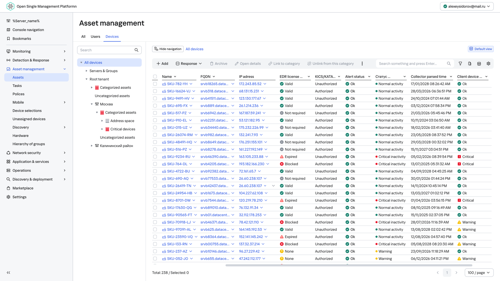
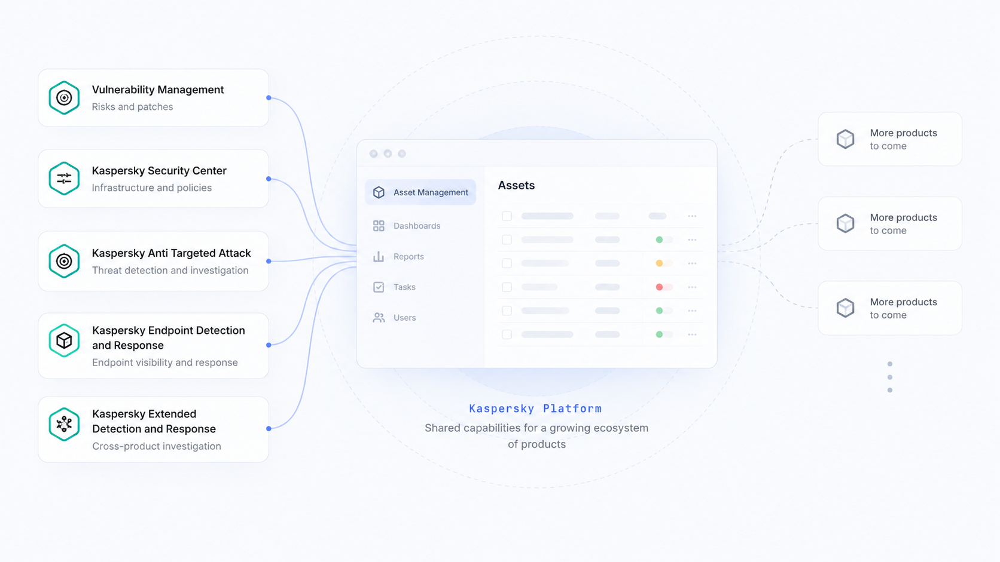
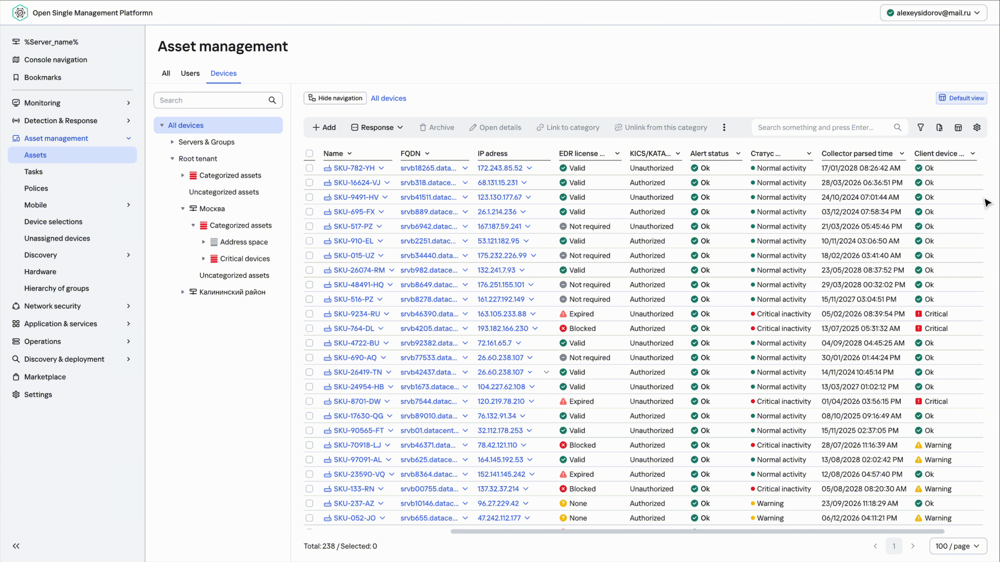
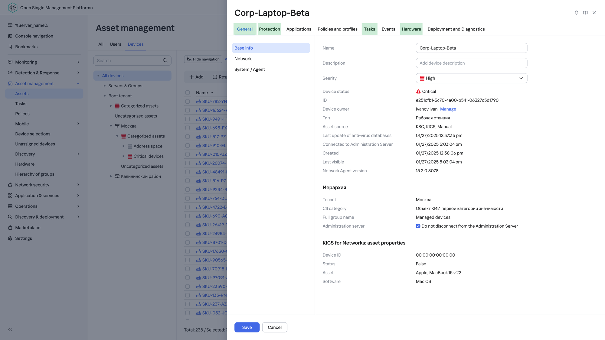

Designing one Asset Management experience for five product teams Проектирование единого Asset Management для пяти продуктовых команд
I took on the platform designer role to bring different product workflows into one shared experience — using design to align teams, shape requirements and move decisions forward.
My role went beyond translating requirements into UI. I worked across product boundaries, synthesized competing needs, initiated exploration where requirements did not yet exist and used design to facilitate decisions between teams.
Я взяла на себя роль платформенного дизайнера и помогла объединить разные продуктовые сценарии в одном общем разделе — через макеты синхронизировала команды, помогала формировать требования и двигать решения вперёд.
В этой задаче моя роль была шире, чем просто отрисовать интерфейс по требованиям. Я работала сразу с несколькими продуктовыми командами, соединяла их разные сценарии в одно решение, самостоятельно инициировала работу там, где требований ещё не было, и использовала дизайн как инструмент для принятия общих решений.

Challenge
Multiple products had to share one Asset Management space while bringing different workflows, data and priorities.
My role
Acting as a platform designer, I worked across five product teams and translated competing needs into a shared UX direction.
Approach
I used early concepts and prototypes to make abstract requirements tangible and help teams make decisions together.
Impact
The designs helped align teams, unblock requirements and engineering estimation, and shape solutions now moving into implementation.
Проблема
В одном общем Asset Management должны были ужиться несколько продуктов с разными сценариями, данными и требованиями.
Моя роль
Я фактически выполняла роль платформенного дизайнера: работала сразу с пятью командами и помогала свести их разные требования в единое UX-решение.
Подход
Я использовала ранние концепты и макеты не только для проектирования интерфейса, но и как инструмент обсуждения и принятия решений между командами.
Результат
Макеты помогли командам прийти к общему видению, сформировать требования, оценить разработку и заложить основу для решений, которые сейчас уже находятся в продакшене и разработке.
The challenge
01. Five products. Different workflows. One shared space. 01. Пять продуктов. Разные сценарии. Один общий раздел.
Products integrated into the platform share common capabilities such as dashboards, reports, tasks and Asset Management instead of getting separate sections. Thirteen products are already integrated, with more expected to join out of around thirty across the company.
With no dedicated platform PM, analyst or design team, shared solutions had to be aligned across product teams. For Asset Management, I worked with five areas: Vulnerability Management, KSM, KATA, EDR and XDR.
The challenge was to support very different workflows — from vulnerabilities and patches to security context and response actions — without turning one shared table into an overloaded, unscalable interface.
Продукты, интегрированные в платформу, не получают отдельных разделов — они используют общие возможности: дашборды, отчёты, задачи и Asset Management. Тринадцать продуктов уже интегрированы, и их станет больше — из примерно тридцати по компании.
Отдельных платформенных продакт-менеджера, аналитика или дизайн-команды нет, поэтому общие решения приходилось согласовывать между продуктовыми командами. В Asset Management я работала с пятью направлениями: Vulnerability Management, KSM, KATA, EDR и XDR.
Задача была поддержать очень разные сценарии — от уязвимостей и патчей до контекста безопасности и действий реагирования — не превращая общую таблицу в перегруженный и немасштабируемый интерфейс.

No single platform owner → decisions required cross-team alignment. Нет единого platform owner → решения принимаются через договорённости между командами.
Highlight
The challenge was not to make every product behave the same — but to let different workflows coexist inside one platform experience.
Выделенная мысль
Задача была не в том, чтобы заставить все продукты работать одинаково, а в том, чтобы дать разным сценариям ужиться внутри одного платформенного решения.
Cross-team alignment in practice
02. Using Views & Presets to align five product teams 02. Согласование пяти команд через Views & Presets
Before requirements were finalized, I brought concepts to cross-team meetings to show how product needs could coexist in one interface. The mockups helped teams define what should be shared, what should be product-specific, and how new functionality would fit.
До того как требования были финализированы, я приносила концепты на межкомандные встречи, чтобы показать, как потребности продуктов могут ужиться в одном интерфейсе. Макеты помогали командам определить, что должно быть общим, что — специфичным для продукта и как в это встроится новая функциональность.
The problem Проблема
As more products joined Asset Management, each team needed its own columns, actions and default table configuration. Putting everything into one universal toolbar and table would not scale.
Когда в Asset Management начали добавляться новые продукты, стало понятно, что одной универсальной конфигурации таблицы недостаточно. Каждой команде были нужны свои:
- columns;
- actions;
- default table state;
- ways of working with assets.
- колонки;
- действия;
- дефолтное состояние таблицы;
- сценарии работы с ассетами.
The solution Решение
I created a concept based on Views and Presets.
Each product can provide its own View inside the shared Asset Management space. A View defines the relevant actions, default preset and table columns for that product context. Users can then create additional Presets within the View for their own workflows.
Я подготовила концепцию Views & Presets.
Каждый продукт может приносить в общий Asset Management свой View. View задаёт контекст работы: при его переключении меняются доступные действия, дефолтный preset и набор колонок. Внутри каждого View пользователь может дополнительно создавать собственные Presets под свои сценарии.
Highlight
The mockups were not the result of the discussion — they helped the discussion happen.
Выделенная мысль
Макеты были не результатом обсуждений — они помогали этим обсуждениям состояться.

- View — defines the product context.
- Actions — the toolbar adapts to the selected View.
- Default preset — each product defines the most relevant starting configuration.
- Custom presets — users can save additional configurations within a View.
- View — определяет продуктовый контекст.
- Actions — набор действий меняется в зависимости от выбранного View.
- Default preset — каждый продукт может определить наиболее подходящую конфигурацию таблицы по умолчанию.
- Custom presets — пользователь может сохранять собственные конфигурации внутри View.
Stakeholder feedback after the cross-team concept review
The concept was created within a few days and was positively received by stakeholders for helping the group move the discussion forward quickly.
Feedback после обсуждения концепции с продуктовыми командами
Концепция была собрана за несколько дней и получила положительный отклик — она помогла командам быстро сдвинуть обсуждение с места.
Proactive ownership
03. Designing the Asset Card before the requirements existed 03. Начала проектировать Asset Card ещё до появления требований
The shared Asset Card had not yet been formally defined, and analysts had not started writing requirements. Rather than waiting for the task to reach design, I initiated the exploration myself.
Общая карточка ассета на тот момент ещё не была формально проработана. Аналитики не начали писать требования, но было понятно, что платформе всё равно понадобится единая структура, в которую смогут встроиться разные продукты.
Поэтому я решила не ждать появления задачи и самостоятельно начала исследование.
Step 1
Analyze
I reviewed existing Asset Cards across four products and decomposed their structures into common and product-specific information.
Step 2
Synthesize
I identified recurring patterns and regrouped them into a shared information architecture.
Step 3
Design for integration
Instead of mixing fragments owned by several products on the same page, the platform provides the common structure while products contribute self-contained navigation areas such as tabs or menu sections.
Шаг 1
Разобрала существующие решения
Я посмотрела Asset Cards четырёх продуктов и разложила их структуру на отдельные информационные блоки: какие данные повторяются, что уникально для продукта, какие разделы можно объединить.
Шаг 2
Собрала общую информационную архитектуру
Я сгруппировала информацию в общие разделы. Уникальные возможности продуктов не исчезали, а встраивались в более общую и понятную структуру.
Шаг 3
Учла будущую разработку
Общая структура остаётся платформенной, а интегрируемые продукты добавляют самостоятельные части навигации — свои табы или пункты меню. Так новым продуктам проще подключаться, не перестраивая весь интерфейс.

Designed for future product integrations. Designed for future integrations — рассчитано на подключение следующих продуктов.
The concept became a tangible model stakeholders could discuss before the formal specification existed. Analysts used it as an input for requirements, while engineers could use it to understand the scope, estimate the work and start planning implementation.
Концепция появилась ещё до готовых требований и стала основой для дальнейшего обсуждения. На её базе аналитики смогли начать формировать требования, а разработчики — понимать объём будущей работы, оценивать её и планировать реализацию.
Highlight
Design reduced ambiguity before requirements, estimation and planning were finalized.
Выделенная мысль
Дизайн помог снизить неопределённость ещё до того, как появились финальные требования.
Outcome
04. From concepts to a shared platform direction 04. От разрозненных требований к общему платформенному решению
Live
Shared Asset Management table
The common Asset Management table is already in production.
In development
Shared Asset Card
An MVP for three products is being built using principles established in the earlier platform concept.
In development
Views & Presets
The table is being extended to support different product workflows while keeping Asset Management shared and scalable.
Live
Shared Asset Management table
Общая таблица Asset Management уже находится в продакшене.
In development
Shared Asset Card
Сейчас разрабатывается MVP общей карточки для трёх продуктов. В её структуре уже используются принципы из моей более ранней концепции.
In development
Views & Presets
Сейчас мы дорабатываем таблицу с помощью Views & Presets, чтобы разные продукты могли поддерживать собственные сценарии внутри общего Asset Management.
Highlight
I used design not only to define the interface, but to help five product teams agree on how they could coexist inside one platform.
Выделенная мысль
Я проектировала не просто интерфейс Asset Management — я помогала пяти продуктовым командам договориться, как им жить внутри одной платформы.